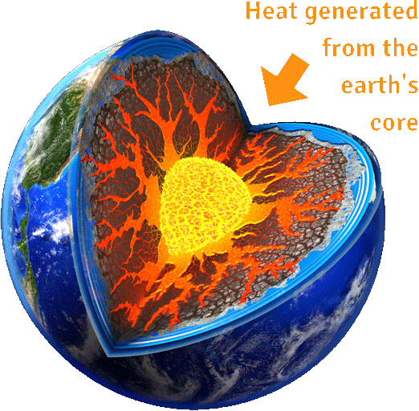

It is known for making electricity. It is also used directly for district heating, or in other heating and cooling applications. The geothermal energy of the Earth's crust comes 20% from the original formation of the planet, and 80% from the radioactive decay of minerals. The Earth is hottest at its core and, from the core to the surface, the temperature gets gradually cooler.
Resources of geothermal energy range from the shallow ground to hot water and hot rock found a few miles or kilometers beneath the Earth's surface, and down even deeper to the extremely high temperatures of molten rock called magma. Geothermal energy escapes as hot water at many hot springs or as steam at geysers.
Almost everywhere, the ground 3m below the Earth's surface maintains a nearly constant temperature between 10° and 16°C. Geothermal heat pumps can tap into this resource to heat and cool buildings. A geothermal heat pump system consists of a heat pump, an air delivery system (ductwork), and a heat exchanger - a system of pipes buried in the shallow ground near the building. In the winter, the heat pump uses power to remove heat from the heat exchanger and pumps it into the indoor air delivery system. In the summer, the process is reversed, and the heat pump uses power again to move heat from the indoor air into the heat exchanger. The heat removed from the indoor air during the summer can also be used to provide a free source of hot water. The power to run the heat pump comes from another source.
Some geothermal power plants use the steam from a reservoir to power a turbine / generator, while others use the hot water to boil a working fluid that vaporizes and then turns a turbine. Hot water near the surface of Earth can be used directly for heat. Direct-use applications include heating buildings, growing plants in greenhouses, drying crops, heating water at fish farms, and several industrial processes such as pasteurizing milk.